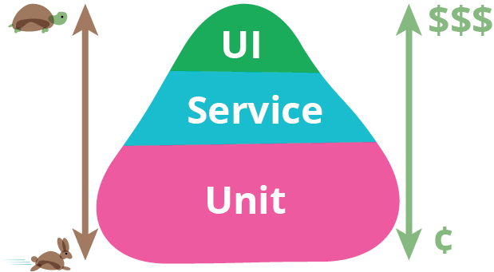

Engines as an Application Platform
Scaling Engine Development


- Autonomy
- Namespacing
- Service Sharing
- Lazy Loading
- Technical Consistency
About Me

Senior Dev at Genesys

Ember Learn Team

Triangle Ember Meetup Organizer
About Us
Orgspan pre Ember 1.0
The Genesys PureCloud Application Platform
Top menu items are routable
Side menu items are built-in


Some Stats
50+ Developers
10 Engines (and counting!)
2-4 Deployments/Month
Easy, Right?
But...
...There were Questions
How To Avoid Breaking Each Other?
Managing Dependencies
Semantic Versioning + Communication = Love
...or at least not killing each other

- Prefer `^` for dependencies (Except Ember)
- Major dependency bumps propagate up, that way the parent is in control
- Lint your dependencies - ember-cli-dependency-lint
- Make addon dependencies public
- Mind your broccoli
Upgrading Ember
- Keep an Ember Upgrade Branch
- Engines should run ember-try against release and beta (at least)
- Gated by tests
- Approvals from Engine Owners
How Do We Share?
Common Addons
Components - Assets - Services
Prefer common to shared
Splitting Addons
Modularity vs Simplicity
Public Addons
- ember-webrtc-devices
- ember-webrtc-troubleshoot
- ember-data-visualizations
- fixtable-ember
Major Addons
- ember-chat-components
Basic Asset Addons
- ember-purecloud-style
Suites
- ember-purecloud-components
- ember-engage-components
How Do We Test?
Push Tests To Engines and Addons
Distributes load
Keeps teams accountable
Gates Version Bumps
Adhere to the Test Pyramid
Fight For Stability
Async Cleanup
Autorun in tests
Globals
Sets in render
SPEEEED
How Do We Build and Deploy?
Each Engine/Addon/App should have its Own
Git Flow
- feature branch
- develop
- release
- master - ship
Automation Gates
- Ember suite breaks builds
- E2E automation gates it
Deploy
- Each Branch gets deployed
- "Time Machine" builds for feature branches
- NPM Publish for Engines
- Prod for App Master
How Do We Handle the Future?
Patching Engines
Managing Size
Ease of Deployment
Third Party Apps
Managing Outages
Cultural Questions
How Do We Communicate Across Diverse, Global Teams?
EmberJS Chat Channel
- Always Answer Questions
- Share Links and New Stuff
- Pitch Ideas
- Garner Reviews
- Gifs

Best Practice Series

Topics So Far
- Components
- Addon Development
- Engines
- Testing
- Ember Data
- NPM and Semver
- Build and Deploy
- The Run Loop
Internal RFC Process
Ripped from Ember <3

For Best Practices, Services, Tech Processes
- Document
- Publicize
- Buy-in
Things We Use it For
- Strategies(Testing, Upgrades)
- New Tooling(introducing mirage, concurrency, etc)
Documentation of APIs, Usage
Inspired from last EmberConf \o/
Creating a Contribution Culture
- Core Team
- Task Board
- Detailed Tasks
- Help Wanted Tags